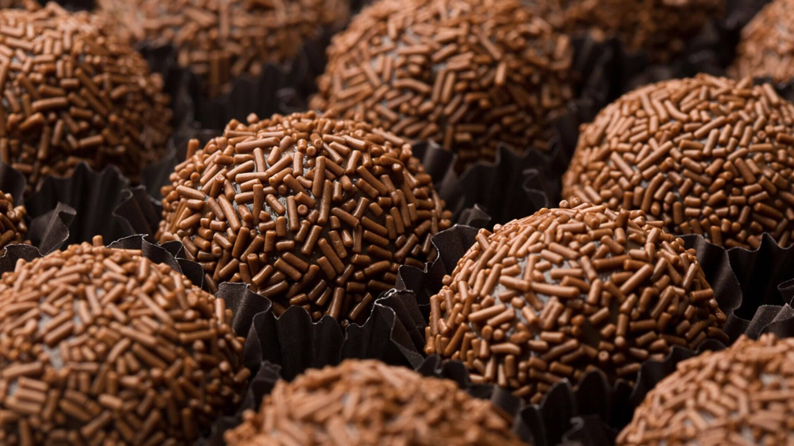

Brigadeiro

Description
One of the most famous brazilian candies, made with condensed milk and cocoa powder.
Ingredients
- 1 box of condensed milk
- 1 tablespoon butter
- 3 tablespoons cocoa powder (or chocolate powder)
- 1 cup of tea of chocolate sprinkles
Steps
- Add the condensed milk and the cocoa/chocolate powder and mix while heating
- Add the butter to avoid burning and sticking to the pan
- As soon as the brigadier begins to boil and form bubbles,
keep stirring until he is thicker and completely de-detach
from the bottom - turn the pan lightly to check if he is detached
- Transfer to a plate and let it cool down
- With the brigadeiro already cold,
grease his hands with a little butter,
take a portion of the brigadeiro and mold in the shape of a ball.
- Roll in the chocolate sprinkles
Home